Installing NVIDIA Graphics Card Driver on Ampere System In this guide, we used Ubuntu 22.04 LTS as a host machine(Laptop/Computer) to prepare our Ampere system, which will be called as a target device here. This guide explains how to install the NVIDIA graphics driver on our Ampere system in Ubuntu 22.04 LTS and 24.04 LTS. [!WARNING] At this stage, our Ampere system only supports NVIDIA graphics cards. 1. Prepare the Ampere system [!CAUTION] Please do not use the VGA output port to install the Ubuntu OS. As it is a server machine, it’s just using an AST2500 graphics driver, which may get crashed during the installation. We suggest using the VGA_COM0 port to complete the installation of Ubuntu OS and NVIDIA graphics driver, as mentioned in this guide. Take the USB to the DB9 console debug connector. Connect the DB9 end to the target system’s VGA_COM0 port and the USB end to the host system. 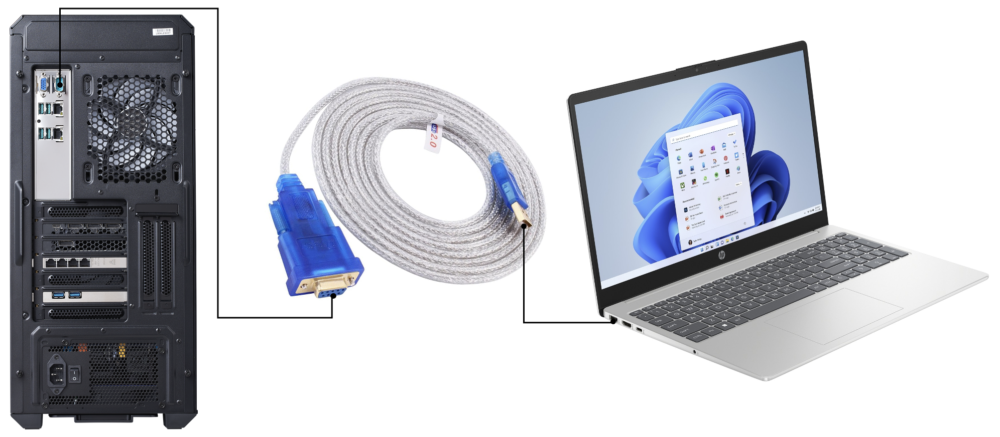 Install the Minicom tool in the host system to read/write the target device. $ sudo apt install minicom Check the device name of the cable. It could be the /dev/ttyUSB0. Then, launch the minicom tool in the terminal. $ sudo minicom -D /dev/ttyUSB0 -b 115200 -F off Now, the setup is ready to install the NVIDIA graphic driver. Power on the target device. You could see the console log in the host device minicom terminal. 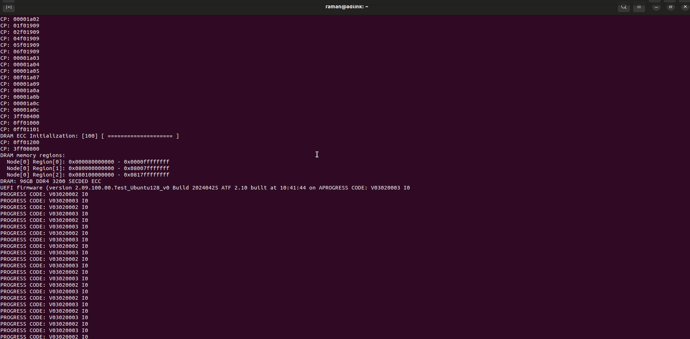 2. Install the NVIDIA graphics driver Continue using the same console and follow the instructions below. Do login and enter the password. Install the Ubuntu desktop. It might take around 30 minutes, based on your internet speed connection. $ sudo apt update && sudo apt upgrade -y$ sudo apt ubuntu-desktop -y 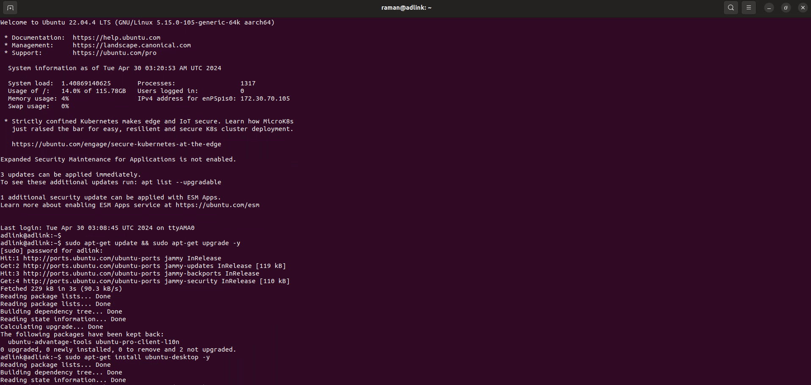 [!IMPORTANT] Before installing the driver, you must change the grub file and block the nouveau driver. Otherwise, the graphics card can’t deliver the output. Install the required dependencies to build and install the NVIDIA graphics driver. $ sudo apt-get install -y g++ freeglut3-dev build-essential libx11-dev libxmu-dev libxi-dev libglu1-mesa-dev libfreeimage-dev libglfw3-dev wget Update the grub file. $ sudo sed -i 's/GRUB_CMDLINE_LINUX_DEFAULT="[^"]*/GRUB_CMDLINE_LINUX_DEFAULT="pci=noaer pcie_aspm=off/' /etc/default/grub$ sudo cat /etc/default/grub$ sudo update-grub 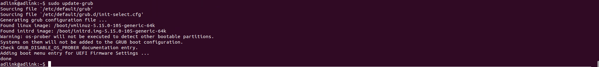 Block the nouveau driver. $ sudo touch /etc/modprobe.d/blacklist-nouveau.conf$ sudo nano /etc/modprobe.d/blacklist-nouveau.conf 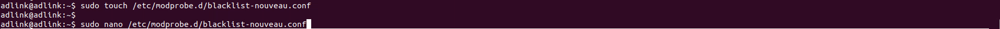 Copy & paste the below two lines to /etc/modprobe.d/blacklist-nouveau.conf blacklist nouveauoptions nouveau modeset=0 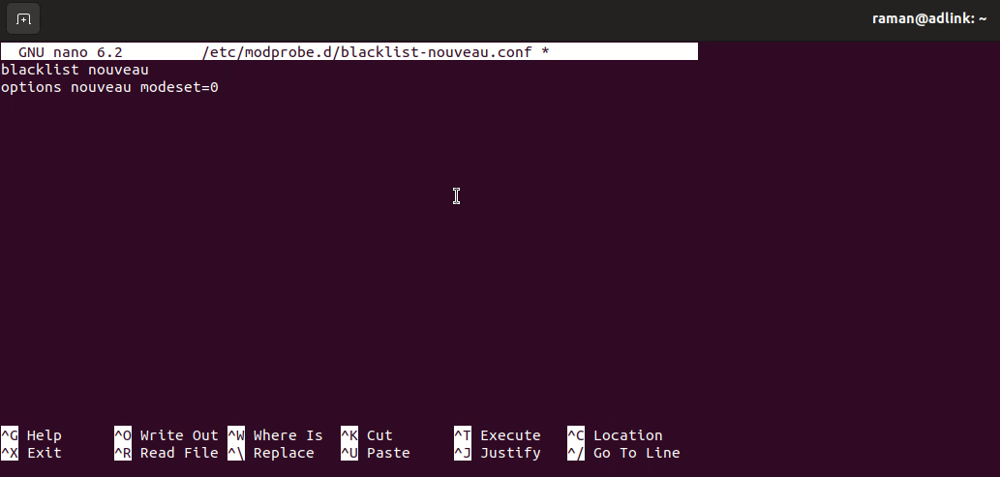 Write out ctl+o, append the changes ctl+m, and exit from the nano ctl+x. Update the initramfs and reboot the system. $ sudo update-initramfs -u$ sudo reboot 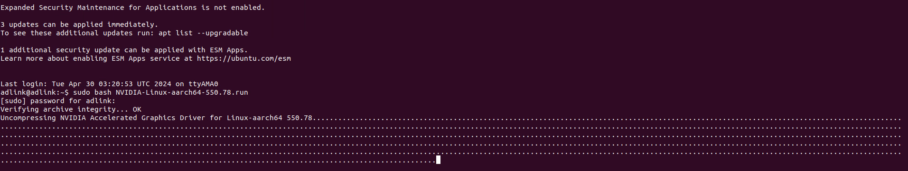 Open one of the web browsers on your host system to download the NVIDIA graphics driver. Select the suitable driver for your graphics card. Click ‘search’. [!IMPORTANT] Make sure you’ve selected ‘Linux aarch64’ 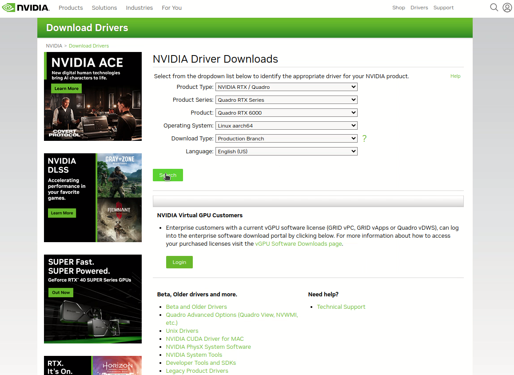 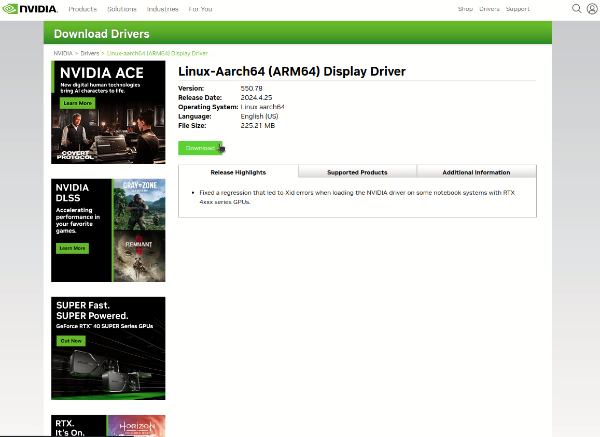 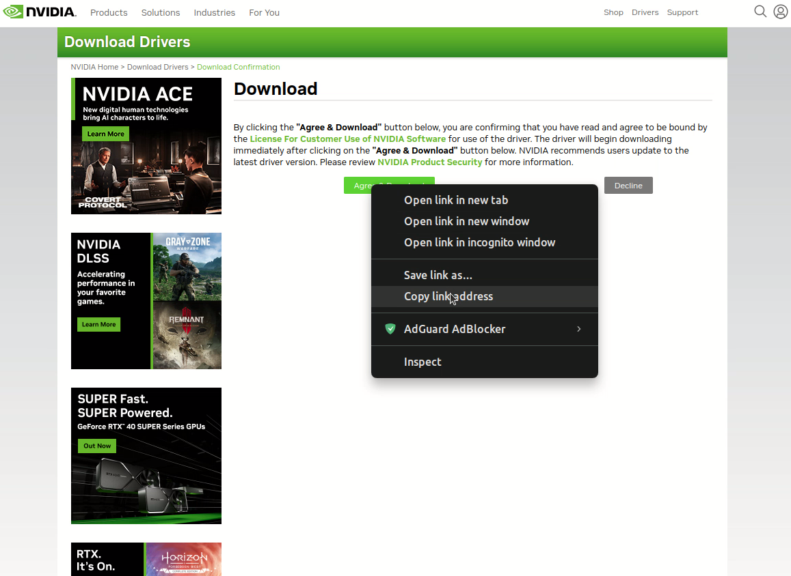 Copy & paste the link here and remove the symbol ‘’<>’’. $ sudo wget <nvidia_driver_download_url> 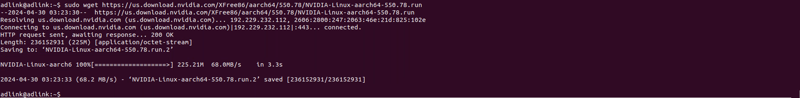 Install the graphics driver. $ sudo bash <nvidia_driver_file_name> 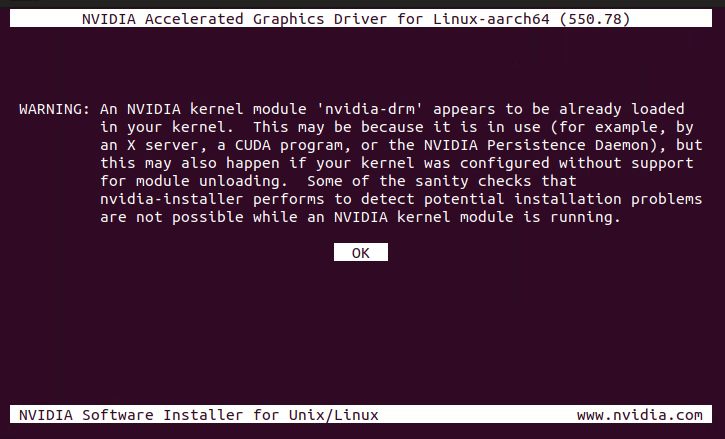 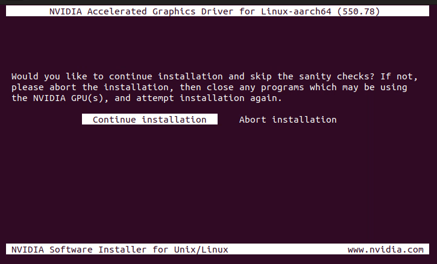 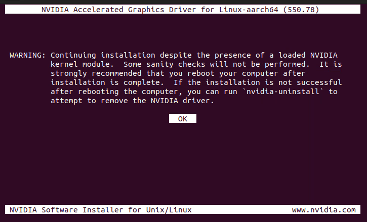 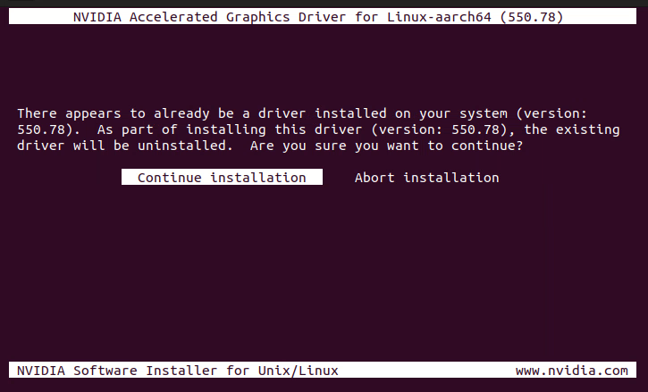 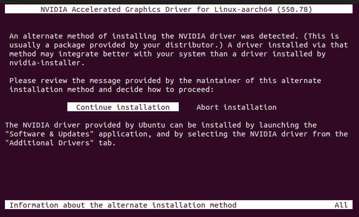 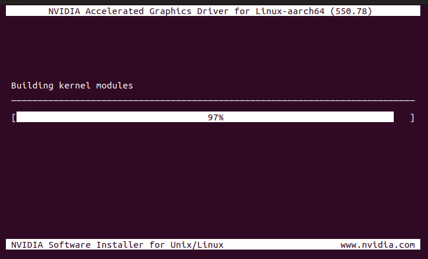 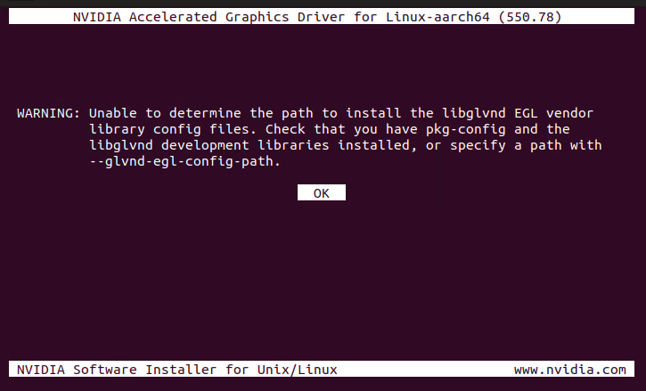 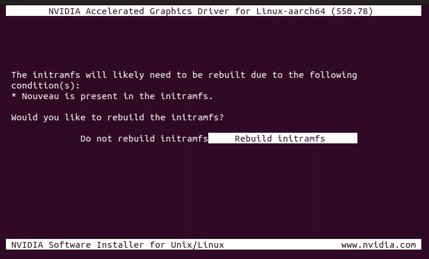 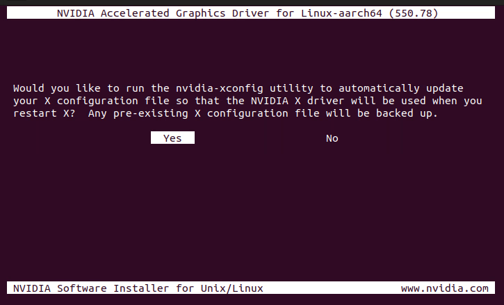 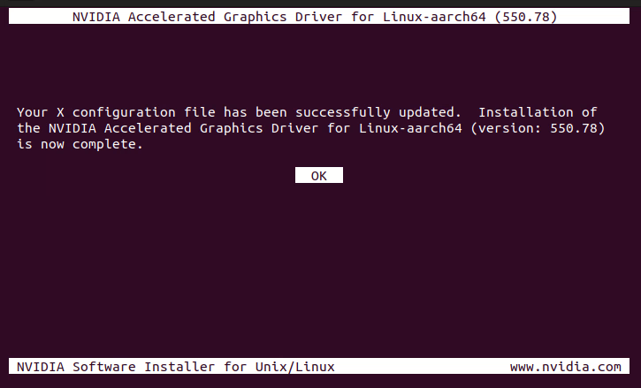 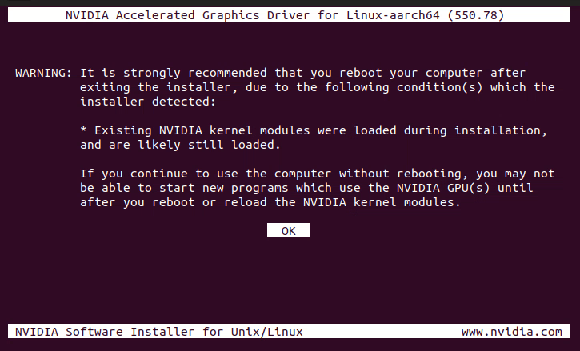 $ nvidia-smi Reboot the system to take advantage of the graphics driver. $ sudo reboot Now, you can connect the monitor with a graphics card to see the output. You can also see the running process of the NVIDIA graphics driver. $ nvidia-smi Now, you can remove the USB to the DB9 console debug connector. [!NOTE] In the future, if you have updated the gnome desktop, you may need to reinstall the driver again; otherwise, the Nouveau driver will overwrite the NVIDIA driver.